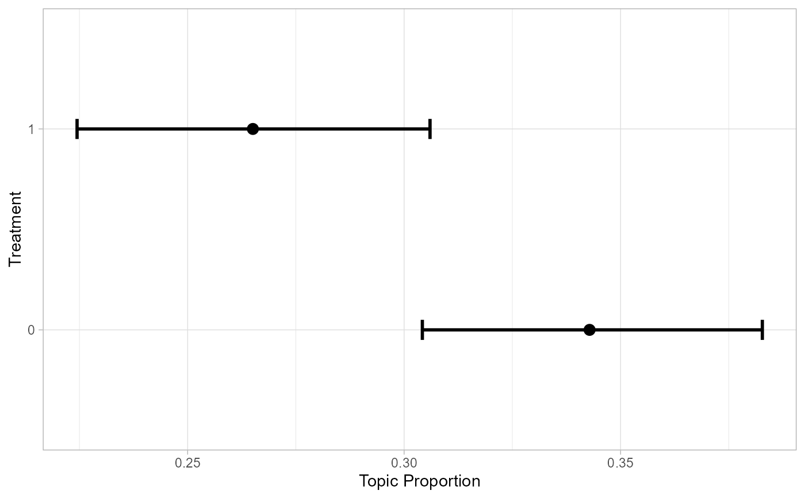
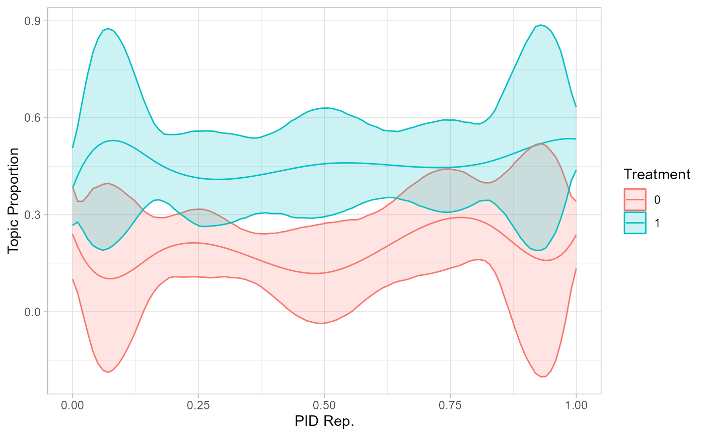

get_effects() is a helper function to store effect estimates from
stm in a data frame.
get_effects(
estimates,
variable,
type,
ci = 0.95,
moderator = NULL,
modval = NULL,
cov_val1 = NULL,
cov_val2 = NULL
)The object containing estimates calculated with
estimateEffect.
The variable for which estimates should be extracted.
The estimate type. Must be either 'pointestimate',
'continuous', or 'difference'.
The confidence interval for uncertainty estimates.
Defaults to 0.95.
The moderator variable in case you want to include an interaction effect.
The value of the moderator variable for an interaction effect. See examples for combining data for multiple values.
The first value of a covariate for type 'difference'.
The second value of a covariate for type 'difference'.
The topic proportion of 'cov_val2' will be subtracted from the
proportion of 'cov_val1'.
Returns effect estimates in a tidy data frame.
library(stm)
library(dplyr)
library(ggplot2)
# store effects
prep <- estimateEffect(1:3 ~ treatment + pid_rep, gadarianFit, gadarian)
effects <- get_effects(estimates = prep,
variable = 'treatment',
type = 'pointestimate')
# plot effects
effects |> filter(topic == 3) |>
ggplot(aes(x = value, y = proportion)) +
geom_errorbar(aes(ymin = lower, ymax = upper), width = 0.1, size = 1) +
geom_point(size = 3) +
coord_flip() + theme_light() + labs(x = 'Treatment', y = 'Topic Proportion')
#> Warning: Using `size` aesthetic for lines was deprecated in ggplot2 3.4.0.
#> ℹ Please use `linewidth` instead.

# combine estimates for interaction effects
prep_int <- estimateEffect(1:3 ~ treatment * s(pid_rep),
gadarianFit, gadarian)
effects_int <- get_effects(estimates = prep_int,
variable = 'pid_rep',
type = 'continuous',
moderator = 'treatment',
modval = 1) |>
bind_rows(
get_effects(estimates = prep_int,
variable = 'pid_rep',
type = 'continuous',
moderator = 'treatment',
modval = 0)
)
# plot interaction effects
effects_int |> filter(topic == 2) |>
mutate(moderator = as.factor(moderator)) |>
ggplot(aes(x = value, y = proportion, color = moderator,
group = moderator, fill = moderator)) +
geom_line() +
geom_ribbon(aes(ymin = lower, ymax = upper), alpha = 0.2) +
theme_light() + labs(x = 'PID Rep.', y = 'Topic Proportion',
color = 'Treatment', group = 'Treatment', fill = 'Treatment')
